전산응용건축제도기능사 (2001-04-29 기출문제)
1과목: 건축구조
1. 철근콘크리트구조의 바닥보 복도(伏圖)에 표시하여야 할 내용은?
- 창호위치 표시
- 벽돌벽 표시
- 마감재료 표시
- 각종 구조부호 표시
(정답률: 56%)

2. 건축물의 외관 색채 결정시 크게 고려하지 않아도 되는 것은?
- 건축물의 형태
- 건축물의 용도
- 건축물의 위치
- 건축물의 구조
(정답률: 64%)
3. 일반적인 콘크리트의 장점 중 잘못 기술된 것은?
- 인장강도가 크다.
- 내화적이다.
- 내구적이다.
- 내수적이다.
(정답률: 63%)
4. 목재 제재치수에서 널재란?
- 두께: 60mm 미만, 너비 : 160mm 이상
- 두께: 60mm 미만, 너비 : 180mm 이상
- 두께: 75mm 미만, 너비 : 160mm 이상
- 두께: 90mm 미만, 너비 : 180mm 이상
(정답률: 68%)
5. 벽돌구조에서 벽체의 두께는 벽높이의 얼마 이상으로 하는가?
- 1/8
- 1/10
- 1/12
- 1/20
(정답률: 47%)
6. 철골구조에서 리벳, 볼트의 상호 최소 중심거리는 지름의 얼마 이상으로 하는가?
- 1.5배
- 2.5배
- 3.0배
- 4.0배
(정답률: 57%)
7. 철근콘크리트 보에서 보단부에 늑근(stirrup)을 특히 많이 넣는 이유는?
- 철근과 콘크리트의 부착력을 증가시키기 위하여
- 보에 생기는 휨모멘트에 저항하기 위하여
- 기둥의 압축력을 감소시키기 위하여
- 보에 생기는 전단력에 저항하기 위하여
(정답률: 47%)
8. 보강콘크리트 블록조에서 벽량은 얼마 이상으로 해야 하는가?
- 10 cm/m2
- 15 cm/m2
- 20 cm/m2
- 25 cm/m2
(정답률: 66%)
9. CAD 입력장치 중 모니터의 화면에서 포인터로 만져서 지정할수 있는 것은?
- 터치펜(Touch Pen)
- 디지타이저(Digitizer)
- 키보드(Key board)
- 마우스(Mouse)
(정답률: 45%)
10. 오르내리창을 잠그는데 쓰이는 철물은?
- 크레센트(crescent)
- 오르내리꽂이쇠(barrel bolt)
- 고두꽂이쇠(cat bar)
- 나이트래취(night latch)
(정답률: 70%)
11. CAD의 입력장치에서 좌표나 위치 정보의 입력장치에 사용되는 것은?
- 스캐너
- 태블릿
- 마우스
- 프로터
(정답률: 32%)
12. 점토제품 중 흡수율이 가장 작은 것은?
- 토기
- 석기
- 도기
- 자기
(정답률: 71%)
13. 콘크리트 구조물에서 하중의 증가 없이도 시간과 더불어 변형이 증대되는 현상은?
- 영계수
- 소성
- 탄성
- 크리프
(정답률: 61%)
14. 코너 비드(corner bead)와 가장 관계가 깊은 것은?
- 난간손잡이
- 형틀 접합부
- 벽체 모서리
- 나선형 계단
(정답률: 68%)
15. 단열유리라고도 하며 철, 니켈, 크롬 등을 가하여 만든 유리로 흔히 엷은 청색을 띤다. 서향의 창, 차량의 창 등의 단열에 이용되는 것은?
- 강화판 유리
- 자외선 투과유리
- 열선 흡수유리
- 자외선 흡수유리
(정답률: 43%)
16. 보통의 내화벽돌 기본치수는? (단위;mm)
- 230×114×65
- 210×100×60
- 230×120×60
- 190×90×60
(정답률: 44%)
17. 합판에 대한 설명 중 적당하지 못한 것은?
- 단판을 서로 직교되게 붙인다.
- 단판을 짝수겹으로 붙인다.
- 단판제조에는 로우터리 베니어 (rotary veneer)법이 많이 쓰인다.
- 값싸게 무늬가 좋은 판을 얻을 수 있다.
(정답률: 50%)
18. 철근콘크리트 배근도 중 기초 바닥에서 옥상 슬래브 상단까지 기초, 기초보, 기둥, 큰보 등의 배근상태를 표시한 도면은?
- 배근단면도
- 라멘배근도
- 뼈대도
- 구조도
(정답률: 36%)
19. 보통포오틀랜드시멘트의 원료를 짝지은 것으로 옳은 것은?
- 화강암, 석고, 점토
- 점토, 모래, 석고
- 석회석, 점토, 석고
- 석회석, 코크스, 점토
(정답률: 49%)
20. 천정평면도 작성시 표시하지 않아도 되는 것은?
- 환기구 개구부
- 조명기구 및 설비기구
- 천정높이
- 반자틀 재료 및 규격
(정답률: 53%)
2과목: 건축재료
21. 철근콘크리트 구조에서 기둥의 최소 단면적은 얼마 이상으로 해야 하는가?
- 300 ㎝2
- 400 ㎝2
- 500 ㎝2
- 600 ㎝2
(정답률: 53%)
22. 창유리의 강도란 일반적으로 무엇을 말하는가?
- 압축강도
- 인장강도
- 휨강도
- 전단강도
(정답률: 64%)
23. 열전도율이 가장 적은 재료는?
- 유리
- 대리석
- 타일
- 콘크리트
(정답률: 40%)
24. 콘크리트의 배합에서 물시멘트비와 가장 관계가 있는 것은?
- 강도
- 내구성
- 내화성
- 내수성
(정답률: 63%)
25. 회반죽 바름에서 여물을 넣는 주된 이유는?
- 균열을 방지하기 위해
- 점성을 높히기 위해
- 경화속도를 높히기 위해
- 경도를 높히기 위해
(정답률: 70%)
26. 점토제품의 제조시 소성온도의 측정에 일반적으로 많이 쓰이는 것은?
- 광학온도계
- 제게르추
- 방전온도계
- 열전쌍 온도계
(정답률: 57%)
27. 건축물의 묘사 도구 중 도면이 깨끗하고 선명하며 농도를 정확히 나타낼 수 있는 것은?
- 연필
- 물감
- 색연필
- 잉크
(정답률: 74%)
28. 제도용지의 가로길이와 세로길이의 비는?
- 2 : 1
- √2 : 1
- 3 : 1
- √3 : 1
(정답률: 74%)
29. 지반이 연약하거나 기초판이 커야 할 경우 바닥 전체를 기초판으로 만든 기초의 명칭은?
- 줄기초
- 독립기초
- 온통기초
- 복합기초
(정답률: 74%)
30. 플랫슬랩(flat slab)구조에서 슬랩의 최소 두께는?
- 8cm 이상
- 12cm 이상
- 15cm 이상
- 18cm 이상
(정답률: 47%)
31. 벽돌 내쌓기에서 한켜식 내쌓을 때의 내미는 길이는?
- 1/2 B
- 1/4 B
- 1/8 B
- 1 B
(정답률: 50%)
32. 그림과 같은 철근콘크리트 연속보에 대한 배근에서 가장 적절한 배근법은?
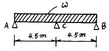
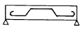
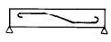
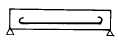
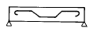
(정답률: 56%)
33. 건물의 기초 지정에서 기성 콘크리트 말뚝 간격은?
- 60cm이상
- 75cm이상
- 90cm이상
- 120cm이상
(정답률: 34%)
34. 철근콘크리트조에서 철근의 최소 간격 규정으로 옳지 않은 것은?
- 철근 지름의 1.5배 이상
- 콘크리트에 쓰이는 최대 자갈지름의 1.25배 이상
- 2.5cm 이상
- 부재 단면치수의 1/10 이상
(정답률: 42%)
35. 영국의 애습딘에 의해 포오틀랜드시멘트가 발명된시기는?
- 18세기중엽
- 19세기초
- 19세기중엽
- 20세기초
(정답률: 63%)
36. KS 규정에서 정한 도면에 사용하는 글자의 크기는 몇 종류 인가?
- 6종류
- 8종류
- 11종류
- 14종류
(정답률: 54%)
37. 도면작성시 사용되는 선의 설명에 적합하지 않은 것은?
- 실선-물체의 단면,외형을 표시하는 선
- 쇄선-기준, 경계, 중심 등을 표시하는 선
- 파선-선이나 면을 전체적으로 표현할 필요없이 생략할 때 사용하는 선
- 지시선-어느 부분을 지적하여 설명하거나 표시할 때 사용하는 선
(정답률: 60%)
38. 점토를 한번 소성하여 분쇄한 재료는?
- 샤모트
- 퍼라이트
- 규석
- 슬래그
(정답률: 50%)
39. 파아티클 보오드에 대한 설명 중 옳지 않은 것은?
- 변형이 극히 적다.
- 방부, 방화제를 첨가하여 방화성을 높일수 있다.
- 흡음성과 열의 차단성이 적다.
- 내장재, 가구재, 창호재 등에 쓰인다.
(정답률: 56%)
40. 등각투상도에서 축과 축사이의 각도로 적합한 것은?
- 45°
- 60°
- 90°
- 120°
(정답률: 58%)
3과목: 건축계획 및 제도
41. 조적조에서 보를 지지하는 벽돌기둥의 높이는 단면 최소 치수의 몇 배를 초과해서는 안되는가?
- 1.5배
- 2배
- 5배
- 10배
(정답률: 32%)
42. 창호구조에서 너비를 가장 크게 해야할 부재는?
- 윗막이
- 선대
- 중막이대
- 밑막이대
(정답률: 40%)
43. 조적조에서 부축벽의 길이는 층높이의 얼마 정도로 하는가?
- 1/2
- 1/3
- 1/4
- 1/5
(정답률: 42%)
44. 철근콘크리트 기둥의 배근에 대한 설명중 옳지못한 것은?
- 원형기둥의 주근은 6개 이상을 배근한다.
- 장방형 기둥에서는 4개 이상을 배근한다.
- 주근은 최소 D16 이상의 철근을 사용해야 한다.
- 띠철근은 지름 6[mm]이상의 것을 사용한다.
(정답률: 56%)
45. 도면작성을 위한 CAD작업에 필요한 장치가 아닌 것은?
- 마우스
- 컴퓨터
- CAD소프트웨어
- 모뎀
(정답률: 84%)
46. 거푸집에 미리 자갈을 넣고 그 골재사이 공극에 시멘트모르타르를 압입하여 콘크리트를 형성한 것은?
- 펌프 콘크리트
- 레디믹스트 콘크리트
- 쇄석 콘크리트
- 프리팩트 콘크리트
(정답률: 49%)
47. 목구조 토대에 대한 설명 중 부적당한 것은?
- 토대는 가능한 지반에서 높히는게 방습상 좋다.
- 재료는 잘 썩지 않는 낙엽송이 좋다.
- 토대의 크기는 기둥과 같게 하거나 다소 작게 한다.
- 모서리 등에는 토대 각도의 변형을 방지하기 위하여 귀잡이 토대를 댄다.
(정답률: 65%)
48. 제도용지 A2의 크기는 A0용지의 얼마정도의 크기인가?
- 1/2
- 1/4
- 1/8
- 1/16
(정답률: 70%)
49. 그림과 같은 박공지붕의 물매가 4 cm 라면 용마루 높이(X)는 얼마인가?
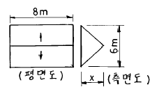
- 0.8[m]
- 1.2[m]
- 1.6[m]
- 2.4[m]
(정답률: 44%)
50. 제도글씨를 쓸 때 일반사항으로 틀린 것은?
- 글자를 명확하게 쓴다.
- 문장은 왼쪽에서 부터 가로쓰기를 원칙으로 한다.
- 글자체는 고딕체로 하며 수직 또는 15°경사로 쓰는 것을 원칙으로 한다.
- 글자의 크기는 폭에 의하여 결정한다.
(정답률: 64%)
51. 석고플라스터에 관한 기술 중 옳은 것은?
- 응결이 느린 미장 재료이다.
- 점성이 큰 재료이다.
- 여물이나 풀을 필요로 한다.
- 유성페인트를 칠할 수 없다.
(정답률: 35%)
52. 재료 구조 표시기호 중 틀린 것은?
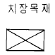
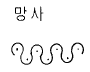
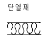
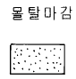
(정답률: 53%)
53. CAD의 직접적인 사용목적이 아닌 것은?
- 생산성 향상
- 도면품질 향상
- 표준화 지향
- 컴퓨터 활용능력 증대
(정답률: 71%)
54. 한국산업규격 중 건축제도 통칙을 정해 놓은 것은?
- KS B
- KS D
- KS F
- KS M
(정답률: 84%)
55. 그림에서 콘크리트 기초판(footing)의 두께 AB는 어느정도가 적당한가?
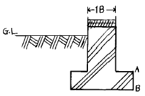
- 20㎝
- 15㎝
- 10㎝
- 5㎝
(정답률: 54%)
56. 20kg의 골재가 있다. 5mm 표준망체에 중량비로 몇kg 이상 통과하여야 모래라고 말할 수 있는가?
- 10 kg
- 12 kg
- 15 kg
- 17 kg
(정답률: 37%)
57. 벽돌조에서 줄기초의 기초판의 두께는 기초판 나비의 얼마 정도로 하는가?
- 1/2
- 1/3
- 1/4
- 1/5
(정답률: 48%)
58. 철근 도면에서 늑근이나 띠철근을 표현하는 선은?
- 파선
- 가는실선
- 일점쇄선
- 굵은실선
(정답률: 56%)
59. 도면 작도시 표시기호에 관한 사항 중 옳지 않은 것은?
- R : 반지름
- ø : 직경
- A : 면적
- W : 높이
(정답률: 66%)
60. 문골과 벽체와의 접합면에서 벽체의 마무리를 좋게 하기 위해 대는 것은?
- 문선
- 풍소란
- 선대
- 인방
(정답률: 58%)